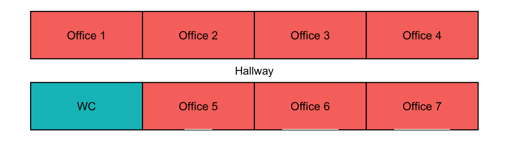
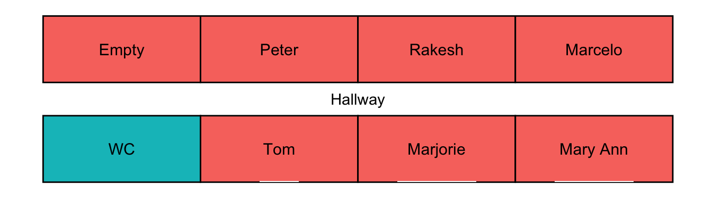

Integer Programming
Consider the following optimization problem.
\[ \begin{array}{ll} \mbox{Maximize} & x_1 + 2x_2 - 0.1x_3 - 3x_4\\ \mbox{subject to} & x_1, x_2, x_3, x_4 >= 0\\ & x_1 + x_2 <= 5\\ & 2x_1 - x_2 >= 0\\ & -x_1 + 3x_2 >= 0\\ & x_3 + x_4 >= 0.5\\ & x_3 >= 1.1\\ & x_3 \mbox{ is integer.} \end{array} \]
CVXR provides the Int and Bool constructors for specifying
integer and boolean variables. These can be combined with vstack
(analog of rbind) or hstack (analog of cbind) to construct
new expressions.
The above problem now in CVXR.
y1 <- Variable(2)
if (packageVersion("CVXR") > "0.99-7") {
y2 <- Variable(1, integer = TRUE)
} else {
y2 <- Int(1)
}
y3 <- Variable(1)
x <- vstack(y1, y2, y3) ## Create x expression
C <- matrix(c(1, 2, -0.1, -3), nrow = 1)
objective <- Maximize(C %*% x)
constraints <- list(
x >= 0,
x[1] + x[2] <= 5,
2 * x[1] - x[2] >= 0,
-x[1] + 3 * x[2] >= 0,
x[3] + x[4] >= 0.5,
x[3] >= 1.1)
problem <- Problem(objective, constraints)We can solve this problem as usual using the default ECOS (actually
ECOS_BB) solver and obtain the optimal value as well as the
solution.
result <- solve(problem, solver = "ECOS_BB")
cat(sprintf("Optimal value: %.3f\n", result$value))## Optimal value: 8.133ecos_solution <- result$getValue(x)Alternative Solvers
We can try other solvers and compare the solutions obtained, like
LPSOLVE and GLPK provided the respective R packages are installed
as documented in the tutorial Using Other
Solvers.
Note: LPSOLVE is now orphaned on CRAN and so no longer supported.
##result <- solve(problem, solver = "LPSOLVE")
##lpsolve_solution <- result$getValue(x)
result <- solve(problem, solver = "GLPK")
glpk_solution <- result$getValue(x)Finally, we can also try a commercial solver that can handle integer programs.
result <- solve(problem, solver = "GUROBI")
gurobi_solution <- result$getValue(x)Below is the table is solutions from all the solvers we used.
solutions <- data.frame(ECOS = ecos_solution,
## LPSOLVE = lpsolve_solution,
GLPK = glpk_solution,
GUROBI = gurobi_solution)
row.names(solutions) <- c("$x_1$", "$x_2$", "$x_3$", "$x_4$")
knitr::kable(solutions, format = "html") %>%
kable_styling("striped") %>%
column_spec(1:4, background = "#ececec")| ECOS | GLPK | GUROBI | |
|---|---|---|---|
| \(x_1\) | 1.666667 | 1.666667 | 1.666667 |
| \(x_2\) | 3.333333 | 3.333333 | 3.333333 |
| \(x_3\) | 2.000000 | 2.000000 | 2.000000 |
| \(x_4\) | 0.000000 | 0.000000 | 0.000000 |
Office Assignment Problem
For a slightly more involved example, we consider the office assignment problem.
The goal is to assign six people, Marcelo, Rakesh, Peter, Tom, Marjorie, and Mary Ann, to seven offices. Each office can have no more than one person, and each person gets exactly one office. So there will be one empty office. People can give preferences for the offices, and their preferences are considered based on their seniority. Some offices have windows, some do not, and one window is smaller than others. Additionally, Peter and Tom often work together, so should be in adjacent offices. Marcelo and Rakesh often work together, and should be in adjacent offices.
draw_office_layout()
The office layout is shown above. Offices 1, 2, 3, and 4 are inside offices (no windows). Offices 5, 6, and 7 have windows, but the window in office 5 is smaller than the other two.
We begin by recording the names of the people and offices.
people <- c('Mary Ann', 'Marjorie', 'Tom',
'Peter', 'Marcelo', 'Rakesh')
offices <- c('Office 1', 'Office 2', 'Office 3',
'Office 4','Office 5', 'Office 6', 'Office 7')We also have the office preferences of each person for each of the seven offices along with seniority data which is used to scale the office preferences.
preference_matrix <- matrix( c(0, 0, 0, 0, 10, 40, 50,
0, 0, 0, 0, 20, 40, 40,
0, 0, 0, 0, 30, 40, 30,
1, 3, 3, 3, 10, 40, 40,
3, 4, 1, 2, 10, 40, 40,
10, 10, 10, 10, 20, 20, 20),
byrow = TRUE, nrow = length(people))
rownames(preference_matrix) <- people
colnames(preference_matrix) <- offices
seniority <- c(9, 10, 5, 3, 1.5, 2)
weightvector <- seniority / sum(seniority)
PM <- diag(weightvector) %*% preference_matrixWe define the the occupancy variable which indicates, using values 1 or 0, who occupies which office.
if (packageVersion("CVXR") > "0.99-7") {
occupy <- Variable(length(people), length(offices), integer = TRUE)
} else {
occupy <- Int(length(people), length(offices))
}The objective is to maximize the satisfaction of the preferences weighted by seniority constrained by the fact the a person can only occupy a single office and no office can have more than 1 person.
objective <- if (packageVersion("CVXR") > "0.99-7") {
Maximize(sum_entries(multiply(PM, occupy)))
} else {
Maximize(sum_entries(mul_elemwise(PM, occupy)))
}
constraints <- list(
occupy >= 0,
occupy <= 1,
sum_entries(occupy, axis = 1) == 1,
sum_entries(occupy, axis = 2) <= 1
)Version 1.0 Note The pre-1.0 function mul_elemwise is now multiply.
We further add the constraint that Tom (person 3) and Peter (person 4) should be no more than one office away, and ditto for Marcelo (person 5) and Rakesh (person 6).
tom_peter <- list(
occupy[3, 1] + sum_entries(occupy[4, ]) - occupy[4, 2] <= 1,
occupy[3, 2] + sum_entries(occupy[4, ]) - occupy[4, 1] - occupy[4, 3] - occupy[4, 5] <= 1,
occupy[3, 3] + sum_entries(occupy[4, ]) - occupy[4, 2] - occupy[4, 4] - occupy[4, 6] <= 1,
occupy[3, 4] + sum_entries(occupy[4, ]) - occupy[4, 3] - occupy[4, 7] <= 1,
occupy[3, 5] + sum_entries(occupy[4, ]) - occupy[4, 2] - occupy[4, 6] <= 1,
occupy[3, 6] + sum_entries(occupy[4, ]) - occupy[4, 3] - occupy[4, 5] - occupy[4, 7] <= 1,
occupy[3, 7] + sum_entries(occupy[4, ]) - occupy[4, 4] - occupy[4, 6] <= 1
)
marcelo_rakesh <- list(
occupy[5, 1] + sum_entries(occupy[6, ]) - occupy[6, 2] <= 1,
occupy[5, 2] + sum_entries(occupy[6, ]) - occupy[6, 1] - occupy[6, 3] - occupy[6, 5] <= 1,
occupy[5, 3] + sum_entries(occupy[6, ]) - occupy[6, 2] - occupy[6, 4] - occupy[6, 6] <= 1,
occupy[5, 4] + sum_entries(occupy[6, ]) - occupy[6, 3] - occupy[6, 7] <= 1,
occupy[5, 5] + sum_entries(occupy[6, ]) - occupy[6, 2] - occupy[6, 6] <= 1,
occupy[5, 6] + sum_entries(occupy[6, ]) - occupy[6, 3] - occupy[6, 5] - occupy[6, 7] <= 1,
occupy[5, 7] + sum_entries(occupy[6, ]) - occupy[6, 4] - occupy[6, 6] <= 1
)
constraints <- c(constraints, tom_peter, marcelo_rakesh)We are now ready to solve the problem.
problem <- Problem(objective, constraints)
ecos_result <- solve(problem, solver = "ECOS_BB")
ecos_soln <- round(ecos_result$getValue(occupy), 0)
rownames(ecos_soln) <- people
colnames(ecos_soln) <- officesWe are now ready to plot the solution (after accounting for the WC).
office_assignment <- apply(ecos_soln, 1, which.max)
office_occupants <- names(office_assignment)[match(c(5:7, 1:4), office_assignment)]
office_occupants[is.na(office_occupants)] <- "Empty"
draw_office_layout(c("WC", office_occupants))
Session Info
sessionInfo()## R version 3.6.1 (2019-07-05)
## Platform: x86_64-apple-darwin19.0.0 (64-bit)
## Running under: macOS Catalina 10.15.1
##
## Matrix products: default
## BLAS/LAPACK: /usr/local/Cellar/openblas/0.3.7/lib/libopenblasp-r0.3.7.dylib
##
## locale:
## [1] C
##
## attached base packages:
## [1] stats graphics grDevices datasets utils methods base
##
## other attached packages:
## [1] ggplot2_3.2.1 kableExtra_1.1.0 CVXR_0.99-7 here_0.1
##
## loaded via a namespace (and not attached):
## [1] reticulate_1.13 tidyselect_0.2.5 xfun_0.11 slam_0.1-46
## [5] purrr_0.3.3 lattice_0.20-38 colorspace_1.4-1 vctrs_0.2.0
## [9] htmltools_0.4.0 viridisLite_0.3.0 yaml_2.2.0 gmp_0.5-13.5
## [13] rlang_0.4.2 R.oo_1.23.0 pillar_1.4.2 glue_1.3.1
## [17] Rmpfr_0.7-2 withr_2.1.2 R.utils_2.9.0 bit64_0.9-7
## [21] scs_1.3-2 lifecycle_0.1.0 stringr_1.4.0 munsell_0.5.0
## [25] blogdown_0.17 gtable_0.3.0 rvest_0.3.5 R.methodsS3_1.7.1
## [29] evaluate_0.14 labeling_0.3 knitr_1.26 highr_0.8
## [33] Rcpp_1.0.3 readr_1.3.1 backports_1.1.5 scales_1.1.0
## [37] jsonlite_1.6 webshot_0.5.2 farver_2.0.1 bit_1.1-14
## [41] hms_0.5.2 digest_0.6.23 stringi_1.4.3 bookdown_0.16
## [45] dplyr_0.8.3 grid_3.6.1 rprojroot_1.3-2 Rglpk_0.6-4
## [49] ECOSolveR_0.5.3 tools_3.6.1 magrittr_1.5 lazyeval_0.2.2
## [53] tibble_2.1.3 crayon_1.3.4 pkgconfig_2.0.3 zeallot_0.1.0
## [57] Matrix_1.2-17 xml2_1.2.2 assertthat_0.2.1 rmarkdown_1.17
## [61] httr_1.4.1 rstudioapi_0.10 R6_2.4.1 compiler_3.6.1